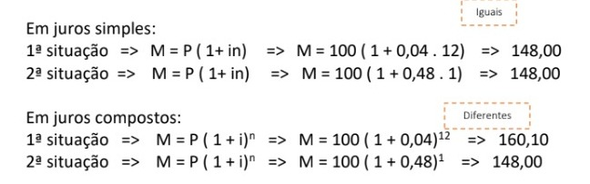

Juros compostos é a cobrança sobre o montante do empréstimo e dos juros
aplicados sobre ele, no caso o famoso “Juros sobre juros”.
Para podermos fazer cálculos com os juros compostos, precisamos usar
duas fórmulas, que são elas:
M = C (1 + i)n
M = J + C
Um exemplo que temos do montante é:
Qual o montante de uma aplicação à juros compostos de
R$15.000,00, pelo prazo de 9 meses, à taxa de 2% ao mês.
Dados: M = ?
C = 15000
n = 9m
i = 2% a.m. = 0,02
Calculo:
M = C (1 + i)n
M = 15000 (1 + 0,02)9
M = 15000 (1,02)9
M = 17.926,35
Diferente dos prazos e taxas com tempo diferente dos juros simples,
por conta do n, o valor vai sempre dar diferente, isso ocorre pois
o N é convertido de forma que fique no mesmo tempo de capitalização
da taxa dada

O gráfico dos juros compostos tem crescimento exponencial, ou seja,
a cada período, o rendimento será sempre maior que o anterior.